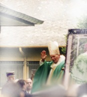

Desole cette page est encore en
Voila quelques images (je l`avoue retravaillées) que j`ai prises sur place:

Qui a dit que le Pape n`est pas un saint ?
Tout ce que j`ai le temps d`écrire, c'est que cette messe fut un grand moment.
Bientot: Des extraits (voire la totalite) de l'homelie... alors revenez voir.
Voici également un petit lien si vous voulez en savoir plus sur le Pape et le Vatican(Il y a de meilleures photos qu'ici.)
A tres bientot.